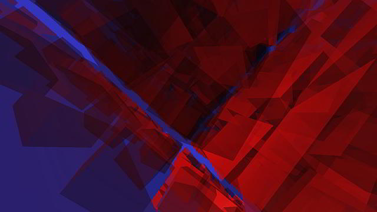

threo.js > Cube Demos
All code on this page available on GitHub at cube-demos
Updates
2011-02-03: A couple of what I thought were minor tweaks and now the code loads in a few seconds and runs fast. This is fun!
Notes
Here is a demo that will bring your computer to its knees. One thousand partially-transparent Phong-shaded red cubes all twirling in different directions as the camera swirls around. Allow a good minute or so just for the demo to load.
Once I've got the hang of particles and shaders and all the good stuff that's coming out of three.js and WebGL, I'm sure I'll look back at this demo with a sheepish smile. But coming from that old world of using AutoLISP and AutoCAD to translate vector geometry this is all a breath of fresh air combined with magic combined with DIY rocket science.
2011-02-02